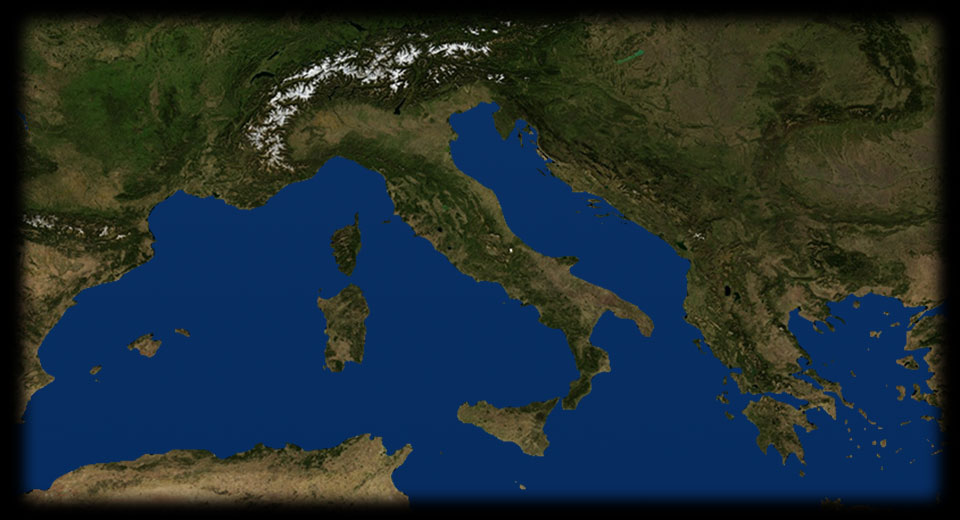

- 150 175
- 105 400
- 95 370
- 160 205
-
MARSIGLIA
Il primo incontro tra Garibaldi e Mazzini resta avvolto nella leggenda, pare sia avvenuto a Marsiglia, intorno al 1833-35, dove il carbonaro Mazzini era esule e il marinaio Garibaldi era approdato. Questa stampa popolare ne rievoca il clima di clandestinità e la tensione ideale che univa i due uomini. -

MODENA
Un ritratto ottocentesco del carbonaro modenese Ciro Menotti, che viene impiccato nel 1831 dopo la scoperta della congiura da lui ordita per rovesciare Francesco IV d'Este a Modena. EMILIA
Nel 1830 a partire da Parigi nascono rivolte in tutta l'Europa: a Parigi il sovrano viene sostituito con Luigi Filippo, filorivoluzionario; il Belgio ottiene l'indipendenza, la Polonia tenta la rivolta. In Emilia il carbonaro filofrancese Ciro Menotti organizza la rivolta con l'aiuto del duca Francesco IV, ma l'esercito austriaco interviene, ed egli viene giustiziato.MARSIGLIA
A Marsiglia Giuseppe Mazzini fonda la Giovine Italia, un'associazione segreta politica organizzata in cellule sparse in tutta Italia pronte a entrare in azione. L'obbiettivo è la trasformazione dell'Italia in una repubblica democratica unitaria.